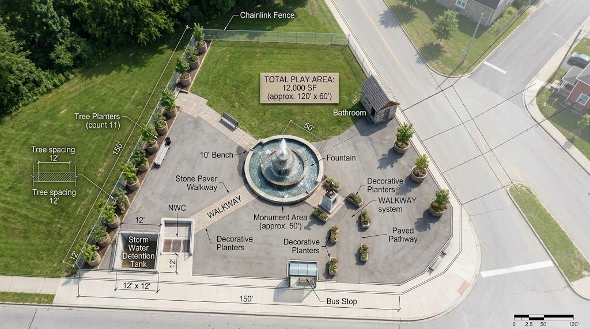
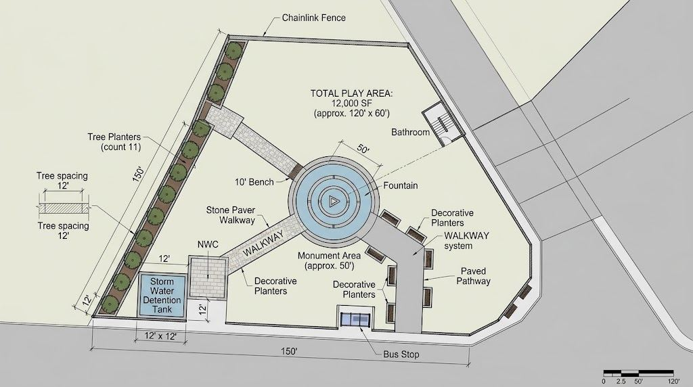
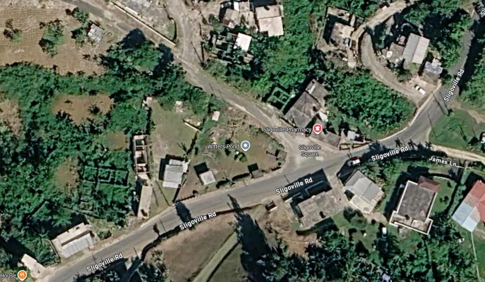

Sligoville
Heritage Park
A refreshed public space centred on heritage, community and everyday use — bringing the existing monument, landscape and pedestrian connections together as a clearer civic destination.

A park organised around its heritage.
The proposal strengthens the monument as the visual heart of the site while creating a more deliberate network of walkways, seating and landscaped edges. The approach keeps the park open and legible, improves the relationship with the surrounding roads, and gives the site a stronger identity as a community gathering space.
Site organisation.

Visualising the park experience.

At Sligoville Square.

The park occupies a prominent triangular parcel at the junction, making the perimeter, entrances and central heritage feature visible from several approaches. The proposal uses that visibility to turn the site into a more coherent landmark while maintaining its neighbourhood scale.